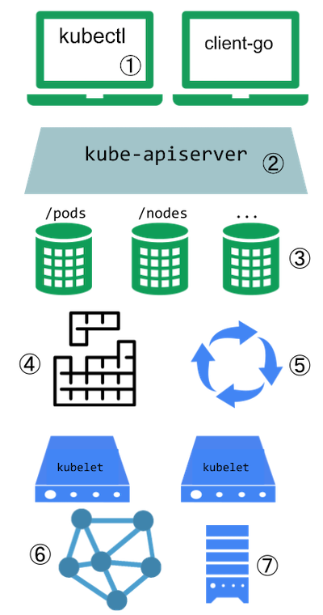
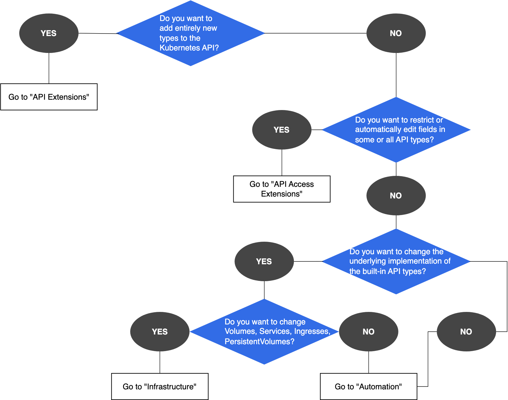

Kubernetes is highly configurable and extensible. As a result, there is rarely a need to fork or submit patches to the Kubernetes project code.
This guide describes the options for customizing a Kubernetes cluster. It is aimed at cluster operators who want to understand how to adapt their Kubernetes cluster to the needs of their work environment. Developers who are prospective Platform Developers or Kubernetes Project Contributors will also find it useful as an introduction to what extension points and patterns exist, and their trade-offs and limitations.
Customization approaches can be broadly divided into configuration, which only involves changing command line arguments, local configuration files, or API resources; and extensions, which involve running additional programs, additional network services, or both. This document is primarily about extensions.
Configuration
Configuration files and command arguments are documented in the Reference section of the online documentation, with a page for each binary:
Command arguments and configuration files may not always be changeable in a hosted Kubernetes service or a distribution with managed installation. When they are changeable, they are usually only changeable by the cluster operator. Also, they are subject to change in future Kubernetes versions, and setting them may require restarting processes. For those reasons, they should be used only when there are no other options.
Built-in policy APIs, such as ResourceQuota, NetworkPolicy and Role-based Access Control (RBAC), are built-in Kubernetes APIs that provide declaratively configured policy settings. APIs are typically usable even with hosted Kubernetes services and with managed Kubernetes installations. The built-in policy APIs follow the same conventions as other Kubernetes resources such as Pods. When you use a policy APIs that is stable, you benefit from a defined support policy like other Kubernetes APIs. For these reasons, policy APIs are recommended over configuration files and command arguments where suitable.
Extensions
Extensions are software components that extend and deeply integrate with Kubernetes. They adapt it to support new types and new kinds of hardware.
Many cluster administrators use a hosted or distribution instance of Kubernetes. These clusters come with extensions pre-installed. As a result, most Kubernetes users will not need to install extensions and even fewer users will need to author new ones.
Extension patterns
Kubernetes is designed to be automated by writing client programs. Any program that reads and/or writes to the Kubernetes API can provide useful automation. Automation can run on the cluster or off it. By following the guidance in this doc you can write highly available and robust automation. Automation generally works with any Kubernetes cluster, including hosted clusters and managed installations.
There is a specific pattern for writing client programs that work
well with Kubernetes called the controller pattern. Controllers typically
read an object's .spec, possibly do things, and then update
the object's .status.
A controller is a client of the Kubernetes API. When Kubernetes is the client and calls out to a remote service, Kubernetes calls this a webhook. The remote service is called a webhook backend. As with custom controllers, webhooks do add a point of failure.
Note:
Outside of Kubernetes, the term “webhook” typically refers to a mechanism for asynchronous notifications, where the webhook call serves as a one-way notification to another system or component. In the Kubernetes ecosystem, even synchronous HTTP callouts are often described as “webhooks”.
In the webhook model, Kubernetes makes a network request to a remote service. With the alternative binary Plugin model, Kubernetes executes a binary (program). Binary plugins are used by the kubelet (for example, CSI storage plugins and CNI network plugins), and by kubectl (see Extend kubectl with plugins).
Extension points
This diagram shows the extension points in a Kubernetes cluster and the clients that access it.

Key to the figure
Users often interact with the Kubernetes API using
kubectl. Plugins customise the behaviour of clients. There are generic extensions that can apply to different clients, as well as specific ways to extendkubectl.The API server handles all requests. Several types of extension points in the API server allow authenticating requests, or blocking them based on their content, editing content, and handling deletion. These are described in the API Access Extensions section.
The API server serves various kinds of resources. Built-in resource kinds, such as
pods, are defined by the Kubernetes project and can't be changed. Read API extensions to learn about extending the Kubernetes API.The Kubernetes scheduler decides which nodes to place pods on. There are several ways to extend scheduling, which are described in the Scheduling extensions section.
Much of the behavior of Kubernetes is implemented by programs called controllers, that are clients of the API server. Controllers are often used in conjunction with custom resources. Read combining new APIs with automation and Changing built-in resources to learn more.
The kubelet runs on servers (nodes), and helps pods appear like virtual servers with their own IPs on the cluster network. Network Plugins allow for different implementations of pod networking.
You can use Device Plugins to integrate custom hardware or other special node-local facilities, and make these available to Pods running in your cluster. The kubelet includes support for working with device plugins.
The kubelet also mounts and unmounts volume for pods and their containers. You can use Storage Plugins to add support for new kinds of storage and other volume types.
Extension point choice flowchart
If you are unsure where to start, this flowchart can help. Note that some solutions may involve several types of extensions.

Client extensions
Plugins for kubectl are separate binaries that add or replace the
behavior of specific subcommands. The kubectl tool can also
integrate with credential
plugins These extensions only affect a individual user's local
environment, and so cannot enforce site-wide policies.
If you want to extend the kubectl tool, read Extend kubectl with
plugins.
API extensions
Custom resource definitions
Consider adding a Custom Resource to Kubernetes if you want
to define new controllers, application configuration objects or other
declarative APIs, and to manage them using Kubernetes tools, such as
kubectl.
For more about Custom Resources, see the Custom Resources concept guide.
API aggregation layer
You can use Kubernetes' API Aggregation Layer to integrate the Kubernetes API with additional services such as the Metrics API.
Combining new APIs with automation
A combination of a custom resource API and a control loop is called the controllers pattern. If your controller takes the place of a human operator deploying infrastructure based on a desired state, then the controller may also be following the operator pattern. The Operator pattern is used to manage specific applications; usually, these are applications that maintain state and require care in how they are managed.
You can also make your own custom APIs and control loops that manage other resources, such as storage, or to define policies (such as an access control restriction).
Changing built-in resources
When you extend the Kubernetes API by adding custom resources, the added resources always fall into a new API Groups. You cannot replace or change existing API groups. Adding an API does not directly let you affect the behavior of existing APIs (such as Pods), whereas API Access Extensions do.
API access extensions
When a request reaches the Kubernetes API Server, it is first authenticated, then authorized, and is then subject to various types of admission control (some requests are in fact not authenticated, and get special treatment). See Controlling Access to the Kubernetes API for more on this flow.
Each of the steps in the Kubernetes authentication / authorization flow offers extension points.
Authentication
Authentication maps headers or certificates in all requests to a username for the client making the request.
Kubernetes has several built-in authentication methods that it
supports. It can also sit behind an authenticating proxy, and it can
send a token from an Authorization: header to a remote
service for verification (an authentication
webhook) if those don't meet your needs.
Authorization
Authorization determines whether specific users can read, write, and do other operations on API resources. It works at the level of whole resources -- it doesn't discriminate based on arbitrary object fields.
If the built-in authorization options don't meet your needs, an authorization webhook allows calling out to custom code that makes an authorization decision.
Dynamic admission control
After a request is authorized, if it is a write operation, it also goes through Admission Control steps. In addition to the built-in steps, there are several extensions:
- The Image Policy webhook restricts what images can be run in containers.
- To make arbitrary admission control decisions, a general Admission webhook can be used. Admission webhooks can reject creations or updates. Some admission webhooks modify the incoming request data before it is handled further by Kubernetes.
Infrastructure extensions
Device plugins
Device plugins allow a node to discover new Node resources (in addition to the builtin ones like cpu and memory) via a Device Plugin.
Storage plugins
Container Storage Interface (CSI) plugins provide a way to extend Kubernetes with supports for new kinds of volumes. The volumes can be backed by durable external storage, or provide ephemeral storage, or they might offer a read-only interface to information using a filesystem paradigm.
Kubernetes also includes support for FlexVolume plugins, which are deprecated since Kubernetes v1.23 (in favour of CSI).
FlexVolume plugins allow users to mount volume types that aren't natively supported by Kubernetes. When you run a Pod that relies on FlexVolume storage, the kubelet calls a binary plugin to mount the volume. The archived FlexVolume design proposal has more detail on this approach.
The Kubernetes Volume Plugin FAQ for Storage Vendors includes general information on storage plugins.
Network plugins
Your Kubernetes cluster needs a network plugin in order to have a working Pod network and to support other aspects of the Kubernetes network model.
Network Plugins allow Kubernetes to work with different networking topologies and technologies.
Kubelet image credential provider plugins
Feature state:
Stable since Kubernetes v1.26
Kubelet image credential providers are plugins for the kubelet to dynamically retrieve image registry credentials. The credentials are then used when pulling images from container image registries that match the configuration.
The plugins can communicate with external services or use local files to obtain credentials. This way, the kubelet does not need to have static credentials for each registry, and can support various authentication methods and protocols.
For plugin configuration details, see Configure a kubelet image credential provider.
Scheduling extensions
The scheduler is a special type of controller that watches pods, and assigns pods to nodes. The default scheduler can be replaced entirely, while continuing to use other Kubernetes components, or multiple schedulers can run at the same time.
This is a significant undertaking, and almost all Kubernetes users find they do not need to modify the scheduler.
You can control which scheduling plugins are active, or associate sets of plugins with different named scheduler profiles. You can also write your own plugin that integrates with one or more of the kube-scheduler's extension points.
Finally, the built in kube-scheduler component supports
a webhook
that permits a remote HTTP backend (scheduler extension) to filter and /
or prioritize the nodes that the kube-scheduler chooses for a pod.
Note:
You can only affect node filtering and node prioritization with a scheduler extender webhook; other extension points are not available through the webhook integration.
What's next
- Learn more about infrastructure extensions
- Learn about kubectl plugins
- Learn more about Custom Resources
- Learn more about Extension API Servers
- Learn about Dynamic admission control
- Learn about the Operator pattern